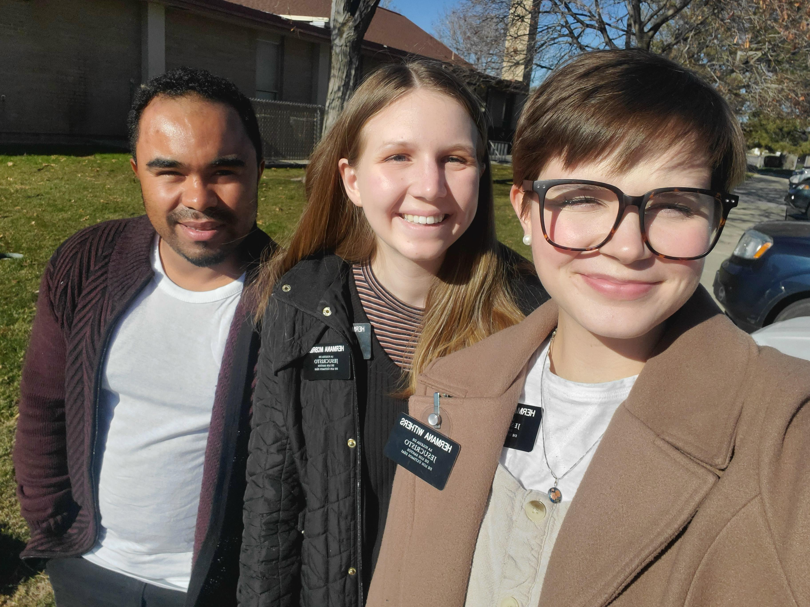
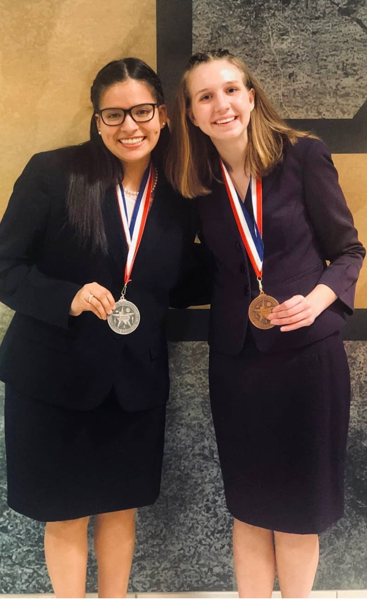

- Education
- Brigham Young University, BYU Marriott School of Business
- Bachelor of Science, Pre-Business
- Minor in Creative Writing and Family Life
- GPA 4.00 - ACT 32
- Phi Eta Sigma National Honor Society
- Merit-based Academic Scholarship (full-tuition)
- Member: BYU Student Association, Experience Design Society
- Work Experience
- WeThrive Education, OCI, Team Lead
- Led a team of five students in efforts to create a project plan
- Communicated with business to carry out the project plan
- Arranged weekly meetings between all team members and partners
- Designed and created info graphics and slide decks for presentations
- Created surveys and conducted research for company leaders
- Religious Organization, Bilingual Volunteer Representative 
- Organized and managed 15 people to expand reach on social media by 50%
- Maximized efficient time management by setting and achieving daily goals
- Coordinated community service projects
- School of Family Life, Research Assistant
- Completed CITI program for Social & Behavioral Research Investigators
- Analyzed, identified, and summarized main points in 20 literary reviews
- Designed and organized data for the BYU Mary Lou Fulton Conference
- Reviewed three and helped create two scales and surveys for evaluating suicide
- Performed analysis on data to improve efficiency in investigations for two projects
- Swim School, Owner and Teacher
- Co-founded and co-managed Swim School with two other people
- Administered scheduling appointments for 23+ families
- Increased the number of customers by 400% in the second year
- Tracked and recorded payments made by customers each week
- Skills
- Public Speaking
- National Speech and Debate Competitor 
- Proficient Writer
- Published author in the BYU Family Perspectives Journal
- Worked on the EXDSociety Newsletter
- Conversational Spanish
- Social Media Marketing
- Six-month experience running and managing Facebook pages and ads
- Intermediate experience editing in Adobe Premiere, Adobe Lightroom, and Canva